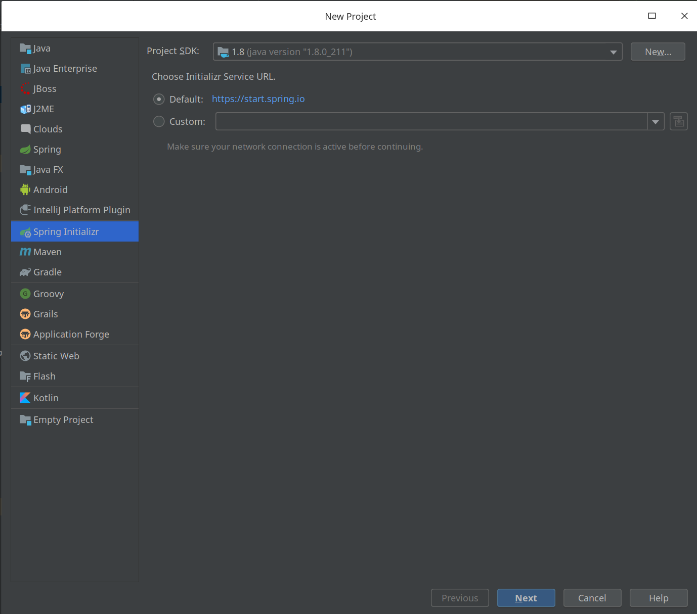
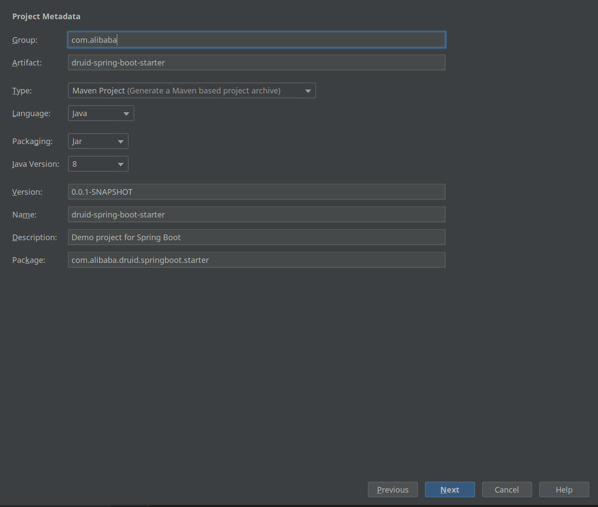
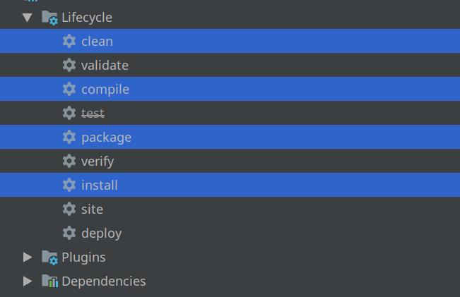

Spring boot 的核心特性就是自动装配。 有时候在项目中需要重复集成某个框架， 但是spring boot 官方并没有帮我们集成stater，为了减少代码的重复编写。 今天我们就来编写一个自定义的 spring boot stater。
简单的说一下 spring boot stater 的自动装配原理
通过 XXAutoCOnfiguration 加载 spring boot 的bean。 可以通过一些 ConditionOn** 之类的注解，根据条件判断是否装配Bean。
在 classpath 目录下面的 META-INF/spring.factories 文件里面写上要装配的Class 位置,比如
1
2
| org.springframework.boot.autoconfigure.EnableAutoConfiguration=\
com.alibaba.druid.springbootstater.autoconfiguration.DruidAutoConfiguration
|
我们以 alibaba 的Druid 连接池子为例：
- 我们在 IDEA 创建一个 Spring boot项目， 可以通过 spring boot initializr 来创建项目。如图所示


点击next 然后进入项目。
在 pom.xml 文件中引入
1
2
3
4
5
6
7
8
9
10
11
12
13
14
15
16
17
18
19
20
21
22
23
24
25
| <properties>
<java.version>1.8</java.version>
<druid.version>1.1.13</druid.version>
</properties>
<dependencies>
<dependency>
<groupId>com.alibaba</groupId>
<artifactId>druid</artifactId>
<version>${druid.version}</version>
</dependency>
<dependency>
<groupId>org.springframework.boot</groupId>
<artifactId>spring-boot-starter</artifactId>
</dependency>
<dependency>
<groupId>org.springframework.boot</groupId>
<artifactId>spring-boot-starter-web</artifactId>
</dependency>
<dependency>
<groupId>org.springframework.boot</groupId>
<artifactId>spring-boot-configuration-processor</artifactId>
<optional>true</optional>
</dependency>
</dependencies>
|
pom 文件引入解释
- 需要引入
spring-boot-starter 包
- 引入
spring-boot-starter-web 方便引入 Druid DashBoard，和加入 SQL 监控等功能。
spring-boot-configuration-processor 解析配置。- 引入要自动装配的框架 druid
- 在目录下面创建一个 config包， 然后再创建一个 DruidAutoConfiguration 的类
1
2
3
4
5
6
7
8
9
10
11
12
13
14
15
16
17
18
19
20
21
22
23
24
| import com.alibaba.druid.pool.DruidDataSource;
import org.springframework.boot.autoconfigure.condition.ConditionalOnClass;
import org.springframework.boot.autoconfigure.condition.ConditionalOnMissingBean;
import org.springframework.boot.context.properties.ConfigurationProperties;
import org.springframework.context.annotation.Bean;
import org.springframework.context.annotation.Configuration;
import javax.sql.DataSource;
@Configuration
public class DruidAutoConfiguration {
@Bean
@ConfigurationProperties(prefix = "spring.datasource")
@ConditionalOnClass(DruidDataSource.class)
@ConditionalOnMissingBean(DataSource.class)
public DataSource dataSource() {
return new DruidDataSource();
}
}
|
- 在 resource 目录下面 创建
META-INF 文件夹， 然后在 META-INF 文件夹下面创建 spring.factories
1
2
| org.springframework.boot.autoconfigure.EnableAutoConfiguration=\
com.alibaba.druid.springboot.starter.config.DruidAutoConfiguration
|
注意上面的value 是填写你的装配类的项目位置。
将项目打包到你的本地 maven 仓库

然后在你的要使用Druid的项目中引入
1
2
3
4
5
| <dependency>
<groupId>com.alibaba</groupId>
<artifactId>druid-spring-boot-starter</artifactId>
<version>0.0.1-SNAPSHOT</version>
</dependency>
|
然后在你的 application.properties 文件中填写你的配置如下
1
2
3
4
5
6
7
8
9
10
11
12
13
14
15
16
17
18
19
20
21
|
spring.datasource.username=root ## 数据库账户名
spring.datasource.password=111111 ## 数据库密码
spring.datasource.driver-class-name=com.mysql.cj.jdbc.Driver ## 数据库驱动
spring.datasource.url=jdbc:mysql://127.0.0.1:3307/jdbc ## 数据库地址
spring.datasource.type=com.alibaba.druid.pool.DruidDataSource
spring.datasource.initialSize=5
spring.datasource.minIdle=5
spring.datasource.maxActive=20
spring.datasource.maxWait=60000
spring.datasource.timeBetweenEvictionRunsMillis=60000
spring.datasource.minEvictableIdleTimeMillis=300000
spring.datasource.testWhileIdle=true
spring.datasource.testOnBorrow=false
spring.datasource.testOnReturn=false
spring.datasource.poolPreparedStatements=true
spring.datasource.filters=stat,wall,log4j
spring.datasource.maxPoolPreparedStatementPerConnectionSize=20
spring.datasource.useGlobalDataSourceStat=true
spring.datasource.connectionProperties=druid.stat.mergeSql=true;druid.stat.slowSqlMillis=500
spring.datasource.initialization-mode=always
|
然后启动你的项目， 这个时候， spring boot 已经自动帮你装配了Druid。
不仅如此还可以 增加 Druid 的 SQL 监控， 和开启 Druid DashBoard等。
该项目Github地址： 项目地址